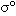

5. PROBLEMS, ISSUES, AND FUTURE DIRECTIONS
Because the backscatter response of microwave energy is a complex mix of a variety of influences—surface roughness, dielectric constant, penetration depth, subsurface features, presence of liquid water, frequency, azimuthal modulation, viewing geometry (incident and azimuth angles), surface slopes, fan-beam vs. pencil-beam approach, etc.—interpretation of the results can become a complicated task, especially as the surface target becomes more complex. For example, in the case of mapping snow cover, weeding out the contributions from vegetation, snow, and the underlying soil is not possible using only a single frequency scatterometer. One thing that could possibly help in the future with this problem is a scatterometer that operates at multiple frequencies. By providing a more detailed perspective, greater spatial resolution (without sacrificing temporal resolution, as with the SIR technique) might also help to discriminate between various components contributing to the resulting values of

.Given the inherent complexity of remote sensing in the microwave spectral region, then, more extensive validation efforts are necessary to improve confidence in the geophysical quantities derived from the data. In the thirty or so studies reviewed for this paper, very few involved direct in situ and/or airborne observations of the quantity being measured. In many cases, results were often simply compared against images of data from other forms of remote sensing (e.g. SAR, passive microwave, etc.) without any attempt at quantitatively comparing the two or estimating error amounts. Other studies, albeit pioneering, simply demonstrated sensitivity to certain traits without any validation effort or intercomparison whatsoever. Now that theories have been developed and ten years’ worth of studies have proven sensitivity of scatterometers to cryospheric applications and have provided sensible results, however, more attention needs to be turned towards validating results if scatterometry is to truly become an important tool in the remote sensing shed. An important step in this direction has recently been taken as part of NASA’s Cold Land Processes Experiment (CLPX) in which coordinated ground, airborne, and satellite scatterometer measurements (amongst many other data) were collected as part of a larger effort to validate spaceborne remote sensing of the cryosphere and to gain a better understand of elements of the cryosphere as they are expressed at multiple spatial scales (see “http://nsidc.org/data/clpx” for more details).
Another concern regarding the use of any remote sensing data is the topic of calibration accuracy, which often drifts over time as instruments and their parts degrade. Identifying and correcting for sensor drift is important and can otherwise confound results. Only one paper that was part of this review explicitly dealt with the issue of calibration accuracy; the authors’ response was to use relative values of backscatter so as to avoid relying on the absolute calibration accuracy of the scatterometer (Nghiem et al., 2001). As well as characterizing calibration accuracy over time for a single instrument, intercalibration between different instruments is also important when comparing their results. Despite many scatterometry intercomparisons used to show interannual and interdecadal change, none of the studies included in this review addressed the issue of intercalibration.
Lastly, it should be emphasized that no single remote sensing instrument is the solution to all problems. Different sensors—active and passive, ranging from visible to microwave wavelengths—solve different pieces of the Earth puzzle so that merging, or “assimilation,” of multiple data sets should be a future direction in remote sensing science. A good example of this is provided in this review on the topic of sea ice motion, for which investigators have merged results from scatterometry, passive microwave radiometry, and buoys for the best possible spatial coverage (Zhao et al., 2002; Liu and Zhao, 1999). Because scatterometers and radiometers view different things (backscatter vs. brightness temperatures) at similar wavelengths and resolutions, the assimilation of these two forms of remote sensing should prove beneficial. The inclusion of both types of instruments on a single satellite for the first time, as part of the JAXA ADEOS-II (a.k.a. Midori-II) mission (though recently terminated due to a power failure), should provide impetus for these kinds of efforts in the near future.
Scatterometry has been demonstrated to be a useful tool for monitoring and understanding the cryosphere. This information complements data from other remote sensing sources, which together help scientists piece together the climate puzzle as well as to monitor flows through the hydrologic system, which have implications for weather, energy production, drinking water, hazards mitigation, navigation, and sea level rise. Scatterometer data have been used to map global snow cover, sea ice extent, and sea ice motion, to detect melting of ice sheets and sea ice, to classify different types of sea ice, to quantify snow accumulation, and to derive the direction of wind patterns over Antarctica. More validation efforts are necessary to instill greater confidence in these derived scatterometer products, especially given the complex variety of factors governing microwave backscatter. The European Space Agency is planning to launch the first of a fourteen-year series of Meteorology Operational Programme (METOP) satellites in the year 2005, which will each carry an Advanced Scatterometer (ASCAT)—a follow-on and improvement to ESCAT—so that the future will continue to provide opportunities for the development and improvement of cryospheric applications of spaceborne scatterometer remote sensing.
{% include google_analytics.ssi %}
Introduction • Importance of the cryosphere • What is scatterometry?
Cryospheric applications of scatterometry • Problems, issues, and future directions • Conclusion • References© 2004, {% include footer.ssi %}